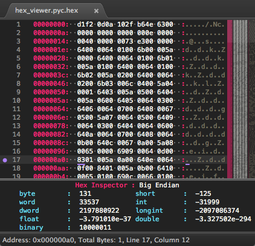

User Guide
Overview
Hex Viewer is a plugin for Sublime Text that allows the toggling of a file into a hex viewing mode. Hex Viewer also supports hex editing.

Features
- View any file (that exist on disk) in a hex format showing both byte and ASCII representation.
- Command to jump to a specific address.
- In place editing of bytes or ASCII chars.
- Highlight selected byte and ASCII code.
- Inspection panel showing different integer representation at the cursor position.
- Configurable display of byte grouping, bytes per line, endianness.
- Export hex view to a binary file.
- Get the checksum of a given file (various checksums are available).
- Generate checksum/hash from input via panel or text selection.
- Optionally auto convert binary to hex view.
Commands
There are various commands available via the command palette or by key-bindings. Below outlines what the commands are and what they do.
HexViewer: Toggle Hex View
Toggles file in or out of hex view.
HexViewer: Reload Hex View
Reloads the current hex view. All edits will be lost.
HexViewer: Show Hex Inspector
Show the Hex Inspector panel. The Hex Inspector is a panel which shows the current selected byte as different unit types.
| Name | Signed | Bits |
|---|---|---|
Byte |
Unsigned | 8 |
Short |
Signed | 8 |
Word |
Unsigned | 16 |
Int |
Signed | 16 |
Dword |
Unsigned | 32 |
LongInt |
Signed | 32 |
Qword |
Unsigned | 64 |
LongLongInt |
Signed | 64 |
Float |
Signed | 32 |
Double |
Signed | 64 |
Binary |
NA | 8 |
HexViewer: Toggle Endiannes (Big|Little)
Toggles the parsing of bytes to big or little endian when showing unit types in Hex Inspector.
HexViewer: Set Bits Per Group
Allows selection from the quick panel the grouping of bytes by 8, 16, 32, 64, and 128 bits. This will reload the file with this formatting. All edits will be lost, so export your changes before you do this.
HexViewer: Set Bytes Per Line
Allows selection from the quick panel the number of bytes to be shown on a line (allowed options are defined in valid_bytes_per_line).
HexViewer: Go to Offset
Moves the cursor to the given offset (address). Input is received through the input panel.
HexViewer: Show Hex Edit Panel
Invoking this command will take the currently selected bytes on a line and display them in an input panel. They can then be modified and submitted to replace the original bytes. Strings can also be used by using the s: prefix followed by the equivalent ASCII characters that are to replace the selected bytes.
HexViewer: Discard All Edits
If at any time you would like to discard all of the changes you have currently made to the hex view, you can invoke this command and a clean hex view will be reloaded.
HexViewer: Export Bin
Exports the current hex view to a binary file.
HexViewer: Run Checksum
By default, it opens up a quick panel with all available hashes that can be used as a checksum. When an algorithm is selected, it is used to retrieve the checksum for the current file in hex view mode.
HexViewer: Generate Hash
Shows a quick panel allowing you to select the desired hash, and then shows an input panel that allows you to specify the string to be hashed. A panel is then displayed with your generated hash according to the selected specifications.
HexViewer: Generate Hash from Selection
Allows you to generate hashes from your current selection(s). Multi-select regions' content will be combined and evaluated together. If a region contains newlines, they will be hashed as well.
HexViewer: Abort (Hex Conversion|Export|Checksum)
Abort the given action.
HexViewer: Open in External Viewer
Opens the current binary file in an external hex editor.
Configurable settings
Settings are configurable in the hex_viewer.sublime-settings file.
group_bytes_by_bits
Groups together the bytes by the number of bits. Valid numbers are must be divisible by bytes and currently go up to 128 bits.
// Group bytes together by bits
// Valid Settings (8|16|32|64|128)
"group_bytes_by_bits" : 16,
valid_bytes_per_line
Sets the number of valid bytes that will be allowed for the valid_bytes_per_line. Keep in mind though that just be because a value is deemed valid here, there are still some restriction that are covered in bytes_per_line.
// These are the valid bytes per line options
"valid_bytes_per_line" : [8, 10, 16, 24, 32, 48, 64, 128, 256, 512],
bytes_per_line
Number of bytes that will be shown on a line. Can be any value found in valid_bytes_per_line. Even if the value is valid, there are some things to be aware of. HexViewer will default to a more reasonable value if the following does not hold true bytes_per_line / (group_bytes_by_bits / 8) == 0; if this does not hold true, there will be an adjustment made to the final number of bytes per line.
// Number of 8 bit bytes per line.
// See "valid_bytes_per_line" for valid options
"bytes_per_line" : 24,
use_lowercase_hex
Controls whether hex values are displayed with lowercase or uppercase characters.
// Use lowercase hex values.
"use_lowercase_hex": true,
custom_font
Sets the font used in a HexViewer view. It is strongly recommended to set this to a monospaced font if your default font is not monospaced.
// Use None to use the current Sublime Text font.
"custom_font" : "none",
custom_font_size
Sets the font size to be used in a HexViewer view.
// Use zero to use the current Sublime Text font size.
"custom_font_size" : 0,
inspector
Sets whether the Hex Inspector panel is enabled. To have the Hex Inspector panel auto-open when a HexViewer view loads, see inspector_auto_show.
// Show inspector panel
"inspector" : true,
inspector_endian
Sets the endianness of the displayed values in the inspector. The string value of big and little can be used.
// endian? (big|little)
"inspector_endian" : "big",
inspector_auto_show
Sets whether the Hex Inspector panel will auto-show on HexViewer view load. If this is disabled, the Hex Inspector panel can still be shown manually when desired.
// Show inspector panel on hex view load and hide on hex view hide
"inspector_auto_show" : true,
inspector_integer_format
Controls the text format for integer output in the inspector panel. Uses standard python string formatting.
// Inspector format strings: ints and unsigned ints
"inspector_integer_format": "%-12s: %-22d",
inspector_float_format
Controls the text format for float output in the inspector panel. Uses standard python string formatting.
// Inspector format strings: floating point decimals
"inspector_float_format": "%-12s: %-22e",
inspector_double_format
Controls the text format for double output in the inspector panel. Uses standard python string formatting.
// Inspector format strings: double floating point decimal strings
"inspector_double_format": "%-12s: %-22e",
inspector_missing/bad_format
Controls the text format for missing/bad output in the inspector panel. Uses standard python string formatting.
// Inspector format strings: "NAN" and not enough bytes to show numbers "--"
"inspector_missing/bad_format": "%-12s: %-22s",
inspector_binary_format
Controls the text format for binary output in the inspector panel. Uses standard python string formatting.
// Binary number formatting
"inspector_binary_format": "%-12s: %-22s"
inspector_timestamp_format
Controls the text format for the timestamp output in the inspector panel. Timestamp format is configured with two parts:
the general string formatting, and the time output which is fed into the string format as the second parameter. Time
format uses Python's strftime.
// Timestamp format
"inspector_timestamp_format": ["%-12s: %-22s", "%c"]
enable_fake_hex_file
When loading a file that is a HexViewer visual representation of a binary file, and the syntax is set to HexViewer's custom syntax, HexViewer will enable basic byte highlight features, Hex Inspector panel etc.
// Treat files in HexViewer syntax with proper format
// (usually .hxv files; saved versions of hex output)
// as real hex views. The following functionality will be omitted:
// hex toggle, editing, writing to file,
// and dynamic changing of bits and bytes functionality.
// Address searching, Hex inspector, etc. should work fine.
"enable_fake_hex_file": true,
highlight_max_bytes
Sets the max number of allowed bytes that HexViewer will highlight when selected. This is a setting that limits the highlight for the sake of performance. Keep this set to a reasonable value.
// Approximate max byte selection.
// The highlighter will highlight individual selections until
// the max number of bytes is found. The selection containing
// the maximum byte will still be finished even if it has more
// bytes than the max.
"highlight_max_bytes" : 1000,
prompt_on_file_too_big
Prompts the user with a dialog that gives the user the option to bypass the default action. By default HexViewer cancels rendering a hex view if the file is too big; or, if an external viewer is configured, HexViewer will open the binary file in the configured external viewer. This option gives the user the ability to conditionally override the default action and render the hex viewer tab despite file size being too large.
// If the file is too large (as defined in the settings file via 'max_file_size_kb'),
// prompt the user with a dialog asking whether they would like to open the file internally anyways
// or use the default action (open in external viewer defined in 'external viewer' or terminate action
// if 'external_viewer' is not set or invalid).
"prompt_on_file_too_big": false,
highlight_throttle
Sets whether highlight_max_bytes will be used. This allows a user to not limit the number of highlighted bytes. It is not recommended to use this for performances sake.
//Enable highlight throttling
"highlight_throttle" : false,
highlight_scope
Define the highlight color when a byte or ASCII char is selected. Colors must be a scope found in your theme file, if not, the color will be the default font color.
// Scope? (Defined in theme files.)
// Examples: (keyword|string|number)
"highlight_scope" : "string",
highlight_scope
Define the highlight color for bytes that have been edited. Colors must be a scope found in your theme file, if not, the color will be the default font color.
"highlight_edit_scope": "keyword",
highlight_icon
Sets a gutter icon for highlighted bytes. Default is set to the string none to hide the icon. This can be changed to either dot, circle, bookmark, cross, or none.
// Icon? (dot|circle|bookmark|cross|none)
"highlight_icon" : "none",
highlight_edit_icon
Sets a gutter icon for edited bytes. Default is set to the string none to hide the icon. This can be changed to either dot, circle, bookmark, cross, none.
"highlight_edit_icon" : "none",
highlight_style
Sets the highlight style for highlighted bytes. Can be solid, outline, underline, or none.
// Style? (solid|outline|underline|none)
"highlight_style" : "solid",
highlight_edit_style
Sets the highlight style for edited bytes. Can be solid, outline, underline, or none.
"highlight_edit_style" : "underline",
max_file_size_kb
Sets a limit for how big of a binary file HexViewer will try and convert to a HexView. Size is in Kilobytes.
// Maximum allowed byte size that HexViewer will parse
"max_file_size_kb": 50000.0,
external_viewer
Sometimes it may be desired to open a hex view in an external editor. Due to the nature of the Sublime Text API, HexViewer's options and speed can be limited, so it can be advantageous to open a file in an external hex editor when performing certain actions or dealing with very large files. external_viewer allows the configuring of the external hex editor. external_viewer is a dictionary containing to parameters. viewer, which is an absolute path to the the external hex editor. args are the arguments that will be passed to the external editor; it is an array of string arguments. You can use ${FILE} has a place holder for the file path that will be sent to the editor. HexViewer will insert the actual file path in the place of ${FILE}.
// External Hex Viewer if max size is exceeded.
// Viewer should be the absolute path.
// Args is an array of command line arguments. Use ${FILE} for the file path.
"external_viewer": {
"viewer": "",
"args": ["${FILE}"]
},
hash_algorithm
The default checksum algorithm to use when creating a hash or checksum (not all values listed below will be found on every platform and system).
// Checksum algorithm default? (the default is what is applied to a file when saving)
// (mdc2|md4|md5|sha|sha1|sha224|sha256|sha384|sha512|ripemd160|crc32|adler32)
"hash_algorithm" : "md5",
checksum_on_save
Controls whether HexViewer will checksum the binary file on save/export.
// Enable checksum on save
"checksum_on_save" : true,
auto_open
Sets whether HexViewer should auto detect binary files and convert them to HexViewer views. When enabled, HexViewer will detect when a view is set to the Hexidecimal syntax, or if the file name matches the auto_open_patterns found below.
// Auto open binary files in hex viewer
// Detects if view has encoding set to 'Hexidecimal'.
// Additionally it can use 'auto_open_patterns' below.
"auto_open" : false,
auto_open_patterns
When auto_open is enabled, HexViewer will use the following list of file patterns to detect binary files for auto conversion.
// Auto open patterns to open in hex viewer
"auto_open_patterns" : ["*.bin", "*.pyc"],
disable_auto_open_hex_encoding
Sets whether auto_open will convert views with the Hexidecimal syntax.
// Disable auto open based on 'Hexidecimal' encoding
"disable_auto_open_hex_encoding": false,
use_sub_notify
Enables use of SubNotify notifications.
// Use sub notify if available
"use_sub_notify": true,